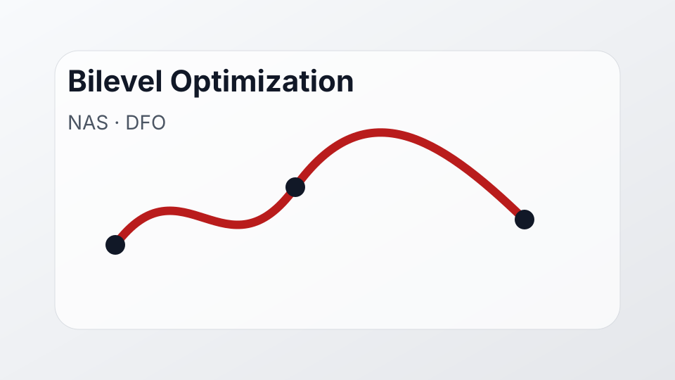

Undergraduate research · manuscript in preparation
Stochastic Methods for Bilevel Optimization

This project studies bilevel optimization methods with mixed-integer, stochastic, and derivative-free components. My work has involved implementing and comparing bilevel algorithms for neural architecture search, including DARTS, StocBiO, and derivative-free bilevel search methods.
Focus
- Mixed-integer bilevel optimization and derivative-free search.
- Stochastic algorithm design and empirical comparisons.
- Neural architecture search experiments in PyTorch.
- Technical writing, reproducible experiments, and theoretical analysis.
Status
Research in progress with a manuscript in preparation.